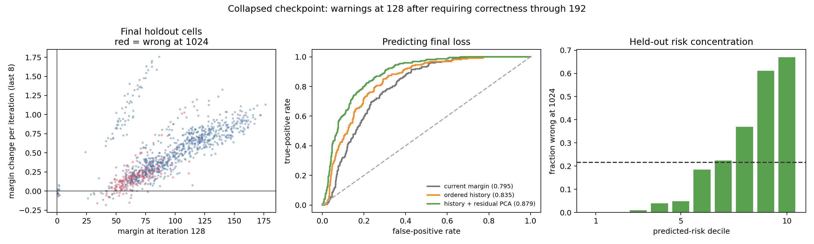
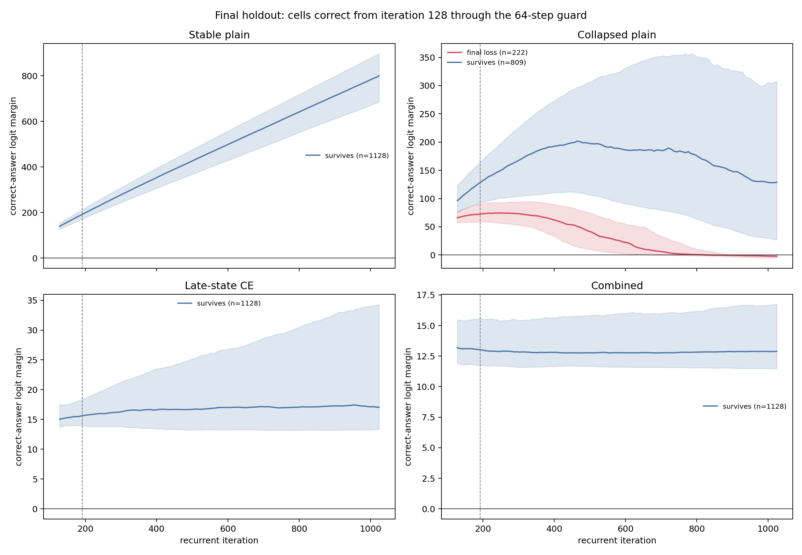
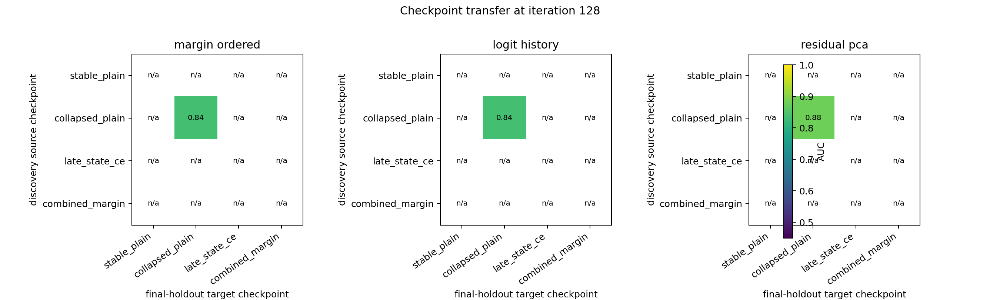
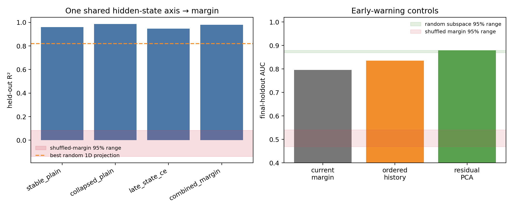

Correct-answer margin and future boundary crossings
Every fitted projection uses discovery puzzles. Validation selects the residual-PCA rank. The plots below use the untouched final puzzles.

Primary held-out test at iteration 128 on the collapsed checkpoint.

Later margin trajectories for cells that survive or fail by iteration 1024.

Predictors fitted on one checkpoint and applied unchanged to another.

Shared-axis, shuffled-margin, shuffled-time, and random-subspace controls.